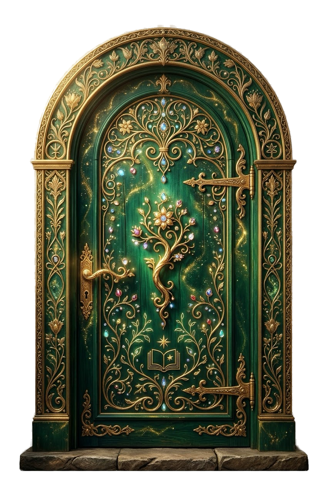
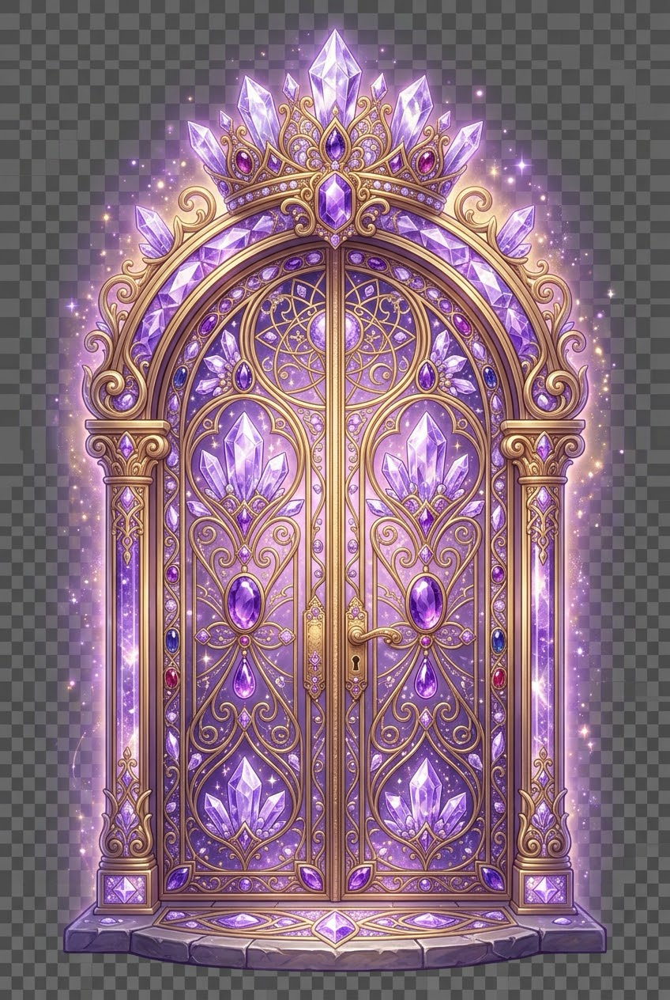
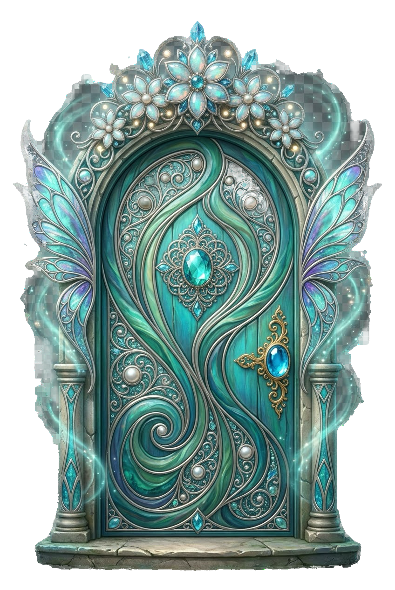
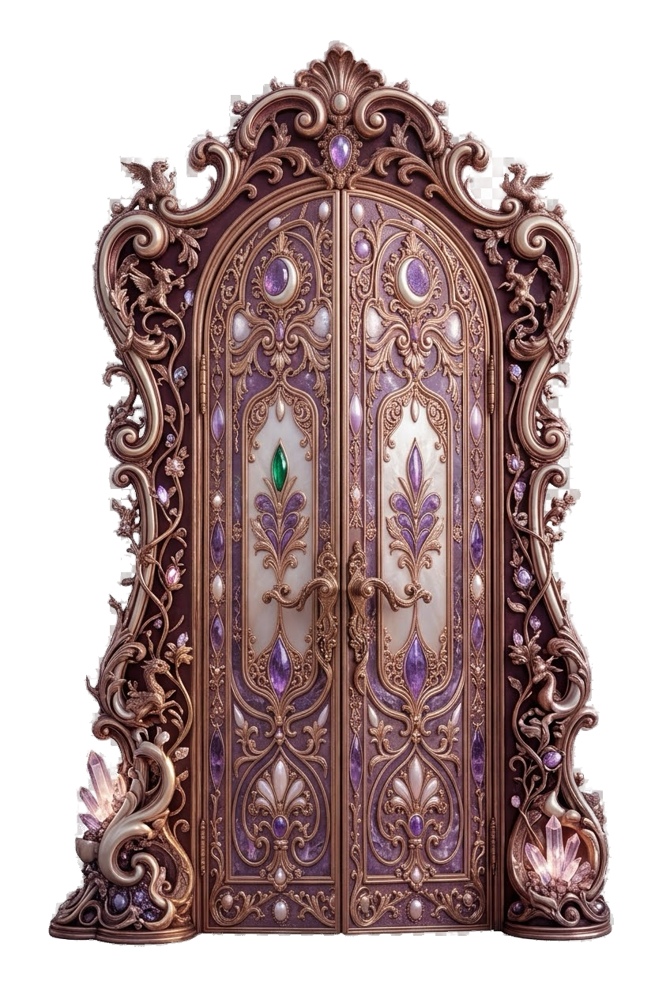
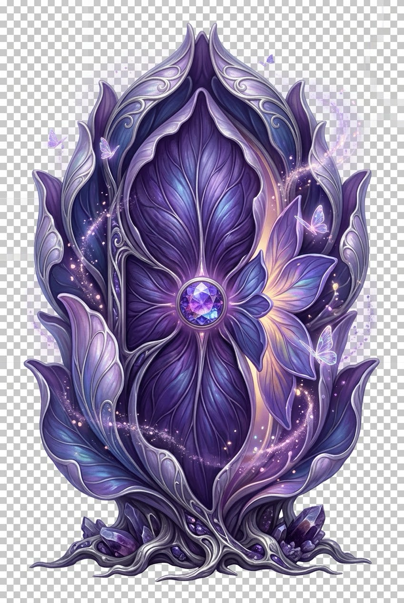

Пять дверей к себе.Одно путешествие к своей уверенности.
В глубине волшебного леса начинается твоя история...
Перед тобой пять дверей. Не ищи правильную. Выбери ту, к которой тебя тянет сейчас.





В этом путешествии ты можешь выбрать одну дверь.